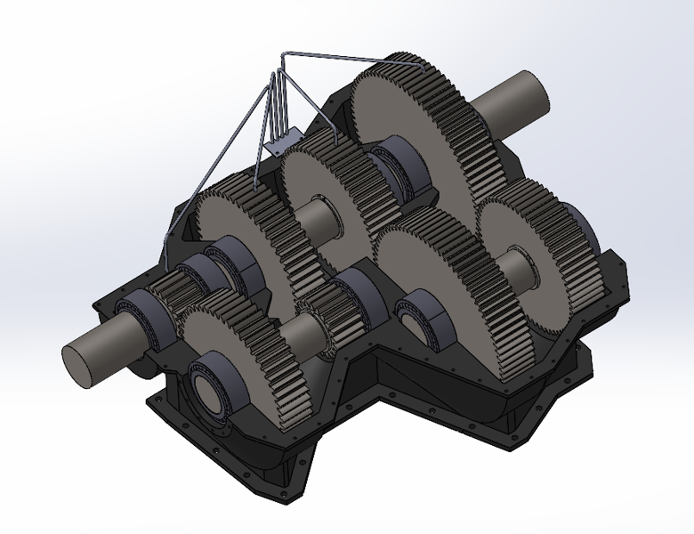

Overview
A course design project for a speed-reduction gearbox for a proposed 30 MW concentrated solar power (CSP) plant, where a steam turbine drives a synchronous generator through the gearbox to feed the grid. The CSP concept stores solar heat in molten salt during the day so the plant can keep generating at night.

Design & Analysis
The design is a compound gearbox with eight steel spur gears arranged in a four-stage reduction, giving a 13.33:1 speed reduction between the turbine and generator, housed in a cast-iron casing. The engineering work covered the full component set: bearing life calculations, shaft fatigue analysis, AGMA-based gear design, and shaft sizing across all four stages.

Focus
Machine design, gear and shaft analysis, and fatigue and bearing-life calculations.
- Brief
- 30 MW CSP Plant (ACS)
- Timeframe
- 2024
- Role
- Team Project
- Domain
- Machine Design
- Key Tools
- SolidWorks · MATLAB · AGMA